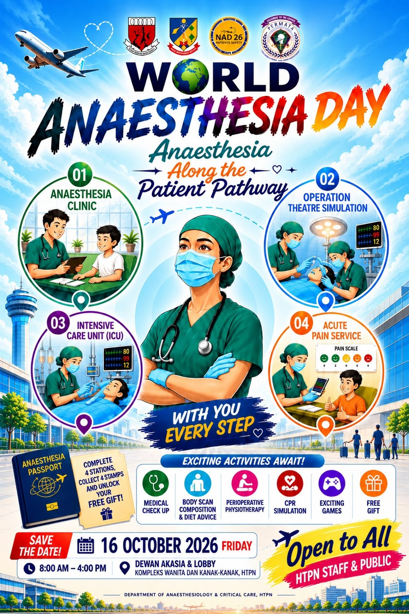

Anaesthesia
Clinic
Your pre-flight check-in.
HTPN • 16 OCTOBER 2026
YOUR ANAESTHESIA JOURNEY STARTS HERE
Ever wondered what can delay surgery?
Step into our departure lounge and put your knowledge to the test.
8 situations · 2 choices · One safer journey
WITH YOU, EVERY STEP
Just like a flight, every patient has a journey — from check-in to take-off, throughout the flight, and finally to a safe landing. Your anaesthesia team is there every step.
Your pre-flight check-in.
Ready for take-off.
Care throughout the flight.
A more comfortable landing.
INTERACTIVE DEPARTURE BOARD
What can delay surgery? Pilih kategori yang sesuai untuk setiap situasi.
YOUR NEXT ADVENTURE
Grab your Anaesthesia Passport at the event. Explore all 4 patient journey stations, collect your stamps and redeem a free gift!
Physical stamps and gift redemption at the event, subject to organiser arrangements.
COME ABOARD. EXPERIENCE THE JOURNEY.
Friday, 16 October 2026 · 8 AM – 4 PM
Dewan Akasia (Level 5) & Lobby
WCC, HTPN
